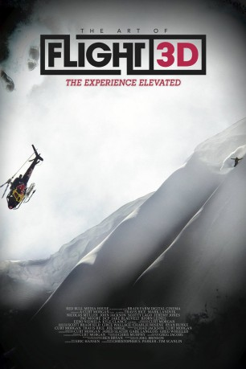

gesehen am 18.03.2015
gesehen am 18.03.2015 
 IMDB-Wertung: 8.3 / 10
IMDB-Wertung: 8.3 / 10  Metascore:
Metascore: 
Travis Rice hat seine Crew aus den besten Snowboardern der Welt zusammengestellt. Mit dabei sind unter anderem der zweimalige Rider of the Year John Jackson, Mark Landvik, Olympia-Bronzemedaillengewinner Scotty Lago, Nicolas Müller, DCP, Jake Blauvelt, Pat Moore und Jeremy Jones. The Art of FLIGHT dokumentiert die nicht immer erfolgreiche Suche nach neuem Terrain, nach unberührten Berghängen, und zeigt die Action aus völlig neuen Perspektiven. Gefilmt wurde in der chilenischen Darwin Range von Patagonien, in Alaskas Tordrillo Range, Wyomings Snake River Range, in Aspen/Colorado, den Anden, sowie in den Kootenay Mountains von British Columbia und der Revelstoke und Goat Range.
Jahr: 2011
Dauer: 80 Minuten
FSK: 12
Land: USA Studio: MovieBiz FilmsTonspuren: DTS - ,
Untertitel:
Auflösung: 1080p (1920x1080) Größe: 7290 MB
Genre: Abenteuer, Dokumentation, Sport
Regisseur: Curt Morgan
Drehbuch:
Soundtrack:
Darsteller:
Datei: X:\Dokumentationen\Sport\Art of Flight, The (2011, FSK12, 1920x1080) 3D.mkv seit 17.03.2015
Festplatte: HD Serien(SU-Z)+Dokus+Musik
 Es gibt insgesamt 34 Filme in der Gruppe 'Dokumentationen\Sport'
Es gibt insgesamt 34 Filme in der Gruppe 'Dokumentationen\Sport'